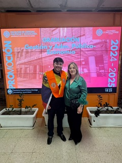
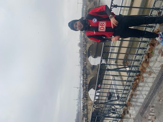
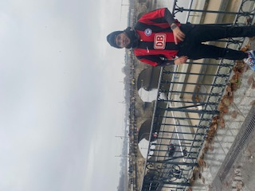
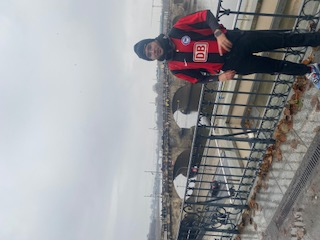
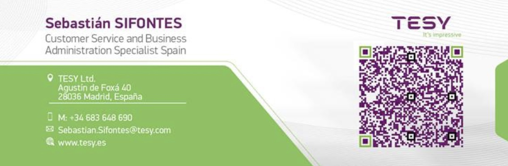
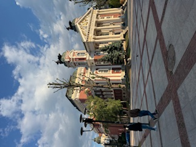
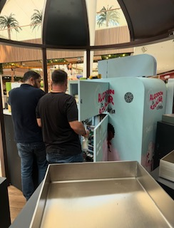
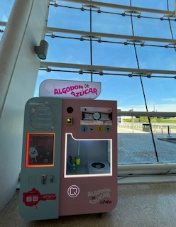

“Nunca fui lo que no pude ser, y pudiera ser que solo soy lo que he podido.”
🎓 Formación Académica
- Doble Grado en Economía y Gestión y Administración Pública — Universidad Complutense de Madrid (2019–2025)
- Estancia de intercambio — Freie Universität Berlin (2023–2024)
- Especialización: Modelos econométricos, Public economics, Green AI

 


📊 Experiencia Investigadora
- Desarrollo de Eco-RETINA como herramienta de análisis para mercados inmobiliarios regulados.
- Colaborador en el grupo de investigación RETINA, bajo la dirección de Teodosio Pérez Amaral.
- Defensa del TFG con calificación sobresaliente (9.5) y propuesto para matrícula de honor.
💼 Otra experiencia
- Actualmente trabajo como Customer Service and Business Administration Specialist en TESY LTD.
- Comparto día a día con un equipo excelente. Aporto y aprendo como especialista de esta posición.
- Participación activa en foros de innovación, IA ética y divulgación científica.


🚀 Emprendimiento Propio
Durante mis años universitarios fundé y dirigí un negocio de máquinas de algodón de azúcar, que logré expandir de 2 a más de 11 máquinas distribuidas en centros comerciales estratégicos de Madrid, Barcelona y A Coruña.
- Planificación completa del negocio: adquisición, permisos, instalación y mantenimiento.
- Gestión de ingresos, logística y relaciones comerciales con centros comerciales.
- Supervisión del crecimiento y escalado nacional con estrategia de reinversión constante.

